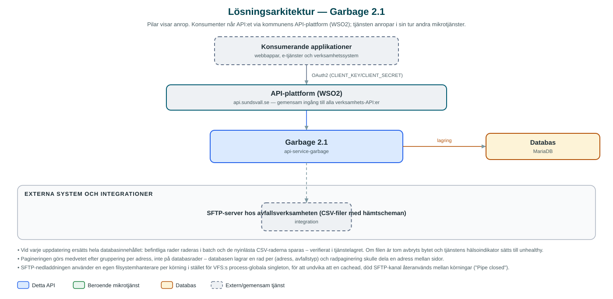

Garbage
Tillhandahåller uppgifter om när avfallshämtning sker på en viss adress eller inom ett område – för e-tjänster och applikationer som vill visa hämtschema för invånare.
Om API:et
Garbage svarar på frågan "när töms soporna hos mig?". API:et lagrar kommunens hämtscheman för avfall och låter applikationer söka fram schemat för en adress – gata, husnummer, postnummer och ort – eller för ett större urval med paginering. Svaret anger bland annat hämtdag, vecka (jämn/udda), avfallstyp och fastighetskategori.
Schemauppgifterna hämtas automatiskt från avfallsverksamhetens system: ett schemalagt jobb laddar varje vardagsmorgon ner en CSV-fil från en SFTP-server, tolkar den och ersätter hela databasinnehållet med de nya raderna. Uppdateringen kan även triggas manuellt via API:et.
API:et hanterar fyra avfallstyper – restavfall, matavfall, plastförpackningar och pappersförpackningar – och skiljer på småhus och fritidshus. Det gör att e-tjänster kan visa ett komplett sorteringsschema per hushåll.
Det här gör API:et
- Hämtschema per adress – Sök fram avfallshämtningsschema utifrån gata, husnummer, postnummer och ort.
- Flera avfallstyper – Schemat omfattar restavfall, matavfall, plastförpackningar och pappersförpackningar.
- Fastighetskategorier – Skiljer på småhus och fritidshus, som kan ha olika hämtintervall.
- Automatisk uppdatering – Ett schemalagt jobb hämtar varje vardagsmorgon en CSV-fil från avfallssystemets SFTP-server och ersätter databasens innehåll.
- Manuell uppdatering – Schemauppdateringen kan även startas på begäran via ett API-anrop.
- Paginering – Stora sökresultat kan hämtas sida för sida, grupperade per adress så att en adress aldrig delas mellan sidor.
API-dokumentation
API:ets samtliga resurser, parametrar och datamodeller finns beskrivna i en OpenAPI-specifikation som är hämtad ur källkodsförrådet. Den kan utforskas interaktivt i Swagger UI eller laddas ner som YAML. Programvaruförteckningen (SBOM) listar tjänstens samtliga tredjepartskomponenter med version och licens.
Teknisk dokumentation
Nedan beskrivs hur tjänsten är uppbyggd, vilka andra tjänster den anropar och vad som krävs för att driftsätta den. Informationen är härledd ur källkoden och dess konfiguration på GitHub.
Arkitektur

API:et är en mikrotjänst (Java 25, Spring Boot via kommunens gemensamma tjänsteplattform dept44 (8.0.8), byggd med Maven). Konsumenter når tjänsten via kommunens gemensamma API-plattform (WSO2) på api.sundsvall.se – tjänsten anropas aldrig direkt. Lagring: MariaDB med Flyway-migrationer; lagrar hämtscheman per adress, avfallstyp och hämtdatum. Övriga integrationer som förekommer i koden: SFTP-server hos avfallsverksamheten (CSV-filer med hämtscheman).
Teknikstack
- Språk: Java 25
- Ramverk: Spring Boot via kommunens gemensamma tjänsteplattform dept44 (8.0.8), byggd med Maven
- Databas: MariaDB med Flyway-migrationer; lagrar hämtscheman per adress, avfallstyp och hämtdatum
- Övrigt: Apache Commons VFS2 och JSch för SFTP, Jackson CSV för filtolkning, ShedLock för schemalagda jobb
Beroenden till andra mikrotjänster
Inga anrop till andra mikrotjänster hittades i källkodens konfiguration.
Programvaruförteckning
Tjänsten bygger på 281 tredjepartskomponenter fördelade på 14 olika licenser. Till skillnad från tabellen ovan, som listar andra mikrotjänster, avses här de programbibliotek som ingår i bygget. Se programvaruförteckningen för hela listan.
Konfiguration och driftsättning
- application.yml med SFTP-uppgifter (värd, användarnamn, lösenord, filnamn) som injiceras via miljön per driftsättning
- MariaDB-anslutning; databasschemat versionshanteras med Flyway
- Schemalagt jobb (cron, vardagar kl. 05) med ShedLock-låsning och maximal körtid, konfigurerbart per kommun (municipality-ids)
- Timeout-inställningar för SFTP-anslutning och överföring så att ett hängande jobb avbryts snabbt
- Anrop görs per kommun – municipalityId ingår i alla API-vägar
Noterbart ur källkoden
- Vid varje uppdatering ersätts hela databasinnehållet: befintliga rader raderas i batch och de nyinlästa CSV-raderna sparas – verifierat i tjänstelagret. Om filen är tom avbryts bytet och tjänstens hälsoindikator sätts till unhealthy.
- Pagineringen görs medvetet efter gruppering per adress, inte på databasrader – databasen lagrar en rad per (adress, avfallstyp) och radpaginering skulle dela en adress mellan sidor.
- SFTP-nedladdningen använder en egen filsystemhanterare per körning i stället för VFS:s process-globala singleton, för att undvika att en cachead, död SFTP-kanal återanvänds mellan körningar ("Pipe closed").
- Tjänsten har inga beroenden till andra kommun-mikrotjänster – all data kommer från CSV-filen via SFTP.
Källkod
Källkoden är öppen och finns hos Sundsvalls kommun på GitHub. I källkodsförrådet finns även instruktioner för att klona, konfigurera och starta tjänsten i egen miljö.